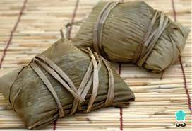
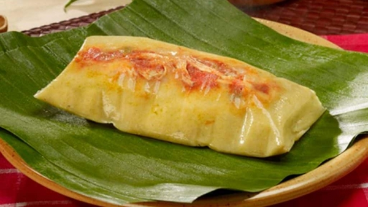

Tamales


Description
Ingredients
- Filling:
- 1 ¼ pounds pork loin
- 1 large onion, halved
- 1 clove garlic
- Chile Sauce:
- 4 dried chile peppers
- 2 cups water
- 1 ½ teaspoons salt
- Husks and Dough:
- 1 (8 ounce) package dried corn husks
- ⅔ cup lard
- 1 (10.5 ounce) can beef broth, or as needed
- 2 cups masa harina
- 1 teaspoon baking powder
- ½ teaspoon salt
- 1 cup sour cream
Directions
- Make the filling: Place pork, onion, and garlic in a Dutch oven. Add enough water to cover and bring to a boil. Reduce heat to low and simmer until pork is cooked through, about 2 hours.
- Meanwhile, make chile sauce: Use rubber gloves to remove stems and seeds from chiles. Place chiles in a saucepan with 2 cups water. Simmer, uncovered, for 20 minutes. Remove from heat and cool.
- Transfer chiles and cooking water to a blender and blend until smooth. Strain mixture into a bowl and stir in salt. Set aside.
- Shred cooked pork and mix in 1 cup chile sauce. Reserve remaining sauce for serving.
- Prepare husks and dough: Soak corn husks in a bowl of warm water until softened, about 30 minutes.
- While the husks are soaking, beat lard with 1 tablespoon broth until fluffy. Combine masa harina, baking powder, and salt in a separate bowl; stir into the lard mixture, adding more broth as needed to form a spongy dough.
- Remove husks from water and pat dry. Spread dough out over husks to 1/4- to 1/2-inch thick.
- Place 1 tablespoon pork filling over center of each. Fold the sides, top, and bottom of each husk in toward the center to enclose dough.
- Arrange tamales in a steamer basket. Place over simmering water and steam for 1 hour.
- Remove tamales from husks. Drizzle with remaining chile sauce and top with sour cream, or mix sour cream into chile sauce first for a creamy sauce.